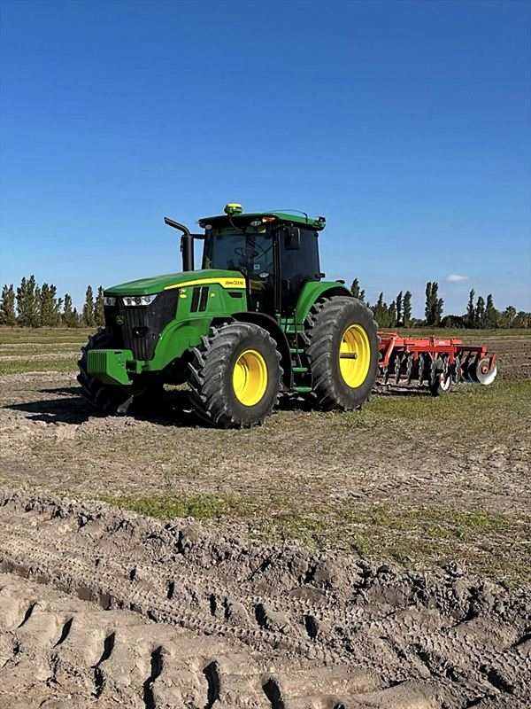
01
Tierra
Preparación del suelo. Laboreo y nivelación antes de que exista cultivo.
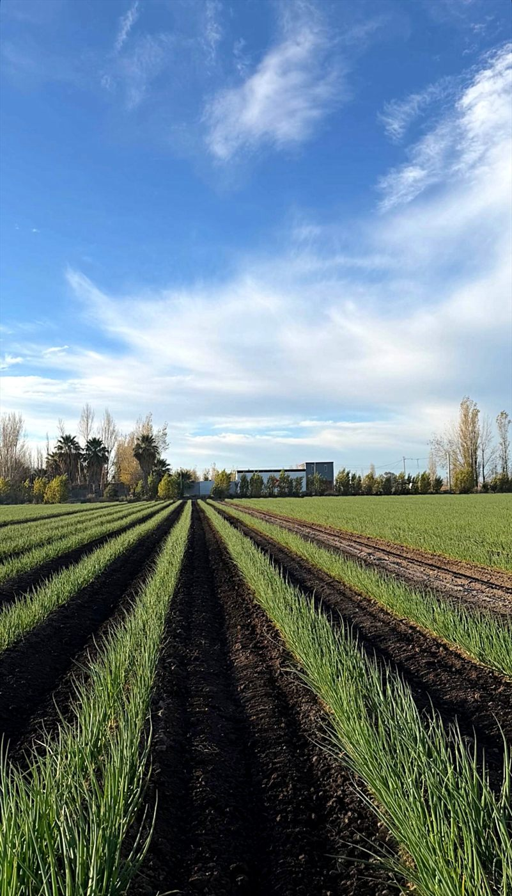
Productora de semillas hortícolas · San Juan, Argentina
Producción de semillas desde 2004, sostenida por más de 30 años de trabajo en el campo. Detrás de cada lote hay un ciclo agrícola completo.
Quiénes somos
HidAgroSeed es una empresa argentina dedicada a la producción de semillas hortícolas. Su historia no empieza en una oficina comercial: empieza en el campo.
Antes de producir semilla hubo más de treinta años de trabajo agrícola. Siembra, manejo de cultivos y cosecha, campaña tras campaña, formando un criterio que no se aprende en un manual: leer un lote, reconocer el momento de cada tarea y entender qué necesita un cultivo para llegar a término.
En 2004 ese conocimiento se orientó a la producción de semillas. Desde entonces, HidAgroSeed trabaja en las distintas etapas que van del lote a la semilla acondicionada, con maquinaria y equipamiento propios.
Producir semilla exige más que producir para consumo. El cultivo no termina cuando el fruto está listo, sino varias etapas después. Esa diferencia es, en buena medida, lo que define nuestro trabajo.
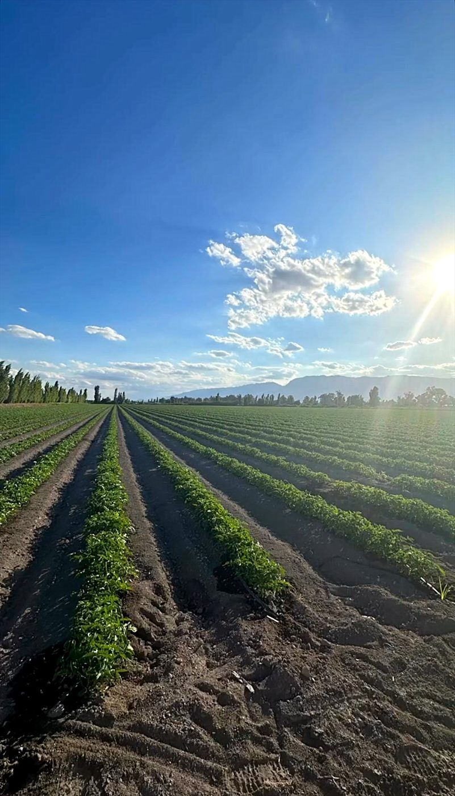
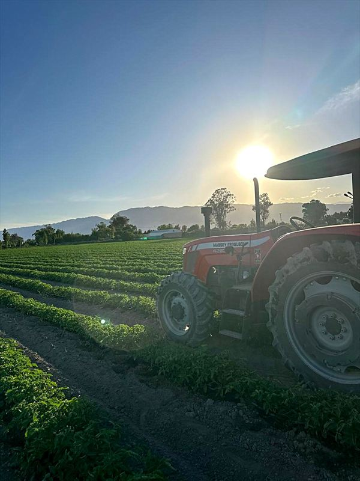
Nuestra experiencia
+30 años
Trabajo agrícola en campo: preparación de suelo, siembra, manejo del cultivo y cosecha. La base sobre la que se construyó todo lo demás.
2004
Comienza la actividad de HidAgroSeed en la producción de semillas. El cultivo deja de terminar en el fruto y pasa a terminar en la semilla.
Actualidad
Producción, acondicionamiento y comercialización de semilla hortícola, con venta minorista y mayorista y envíos a distintos puntos del país.
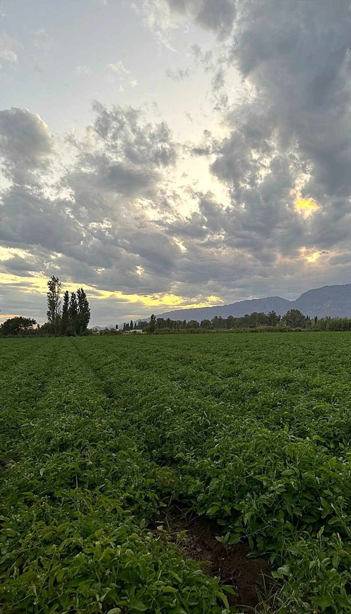
Toda cosecha empieza mucho antes de la siembra.
HidAgroSeed
Nuestra actividad principal
Es el eje de todo lo que hacemos. Una semilla hortícola no se consigue: se produce, a lo largo de un ciclo que exige seguimiento permanente y decisiones tomadas en el momento justo.
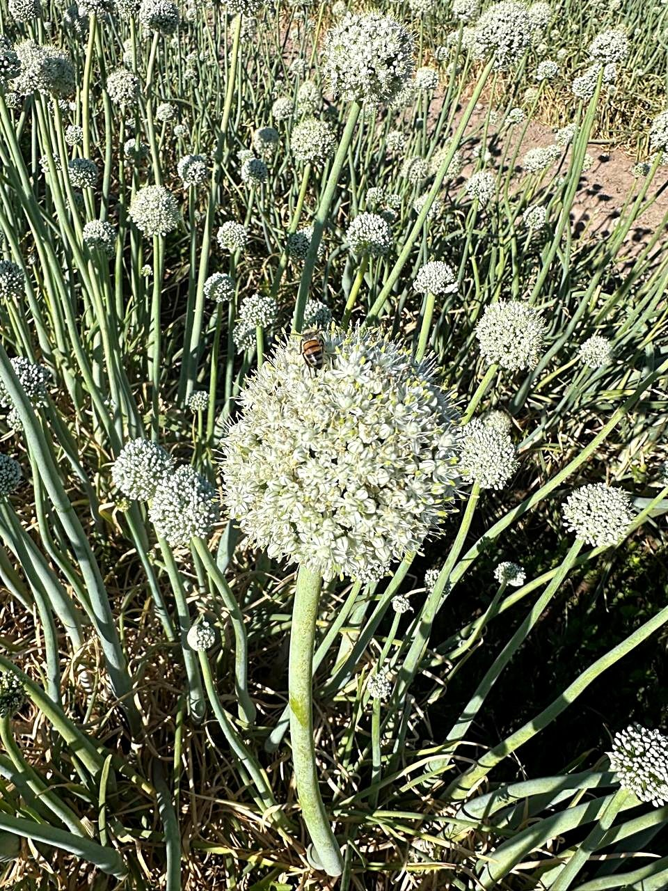
En un cultivo para consumo, la cosecha llega cuando el fruto está listo. En un cultivo destinado a semilla, ese punto es apenas la mitad del camino.
La planta todavía debe llegar a floración, cuajar y madurar, y recién entonces la semilla puede cosecharse. Es un ciclo más largo, más expuesto y con menos margen de corrección: una decisión tardía en floración no se recupera después.
Esa etapa final es la más sensible de todo el proceso y la que más incide en la calidad del lote.
Cada una condiciona a la siguiente. La calidad de un lote no se define en un punto del ciclo, sino en la suma de todos.
Elección del material y del lote de producción según el cultivo y las condiciones de cada campaña.
Implantación y conducción del cultivo destinado a semilla, con un ciclo más extenso que el de un cultivo para consumo.
Control del cultivo a lo largo de todo el ciclo, con atención particular en floración y llenado de semilla.
Recolección en el punto de madurez adecuado, un momento que condiciona directamente el resultado del lote.
Separación de la semilla del material vegetal, la tierra y los cuerpos extraños que la acompañan al cosecharse.
Clasificación y preparación de la semilla para dejarla en condiciones de ser conservada y comercializada.
Almacenamiento en condiciones que preserven las cualidades de la semilla hasta el momento de la entrega.
Preparación y fraccionamiento de los lotes según el volumen y el destino de cada pedido.
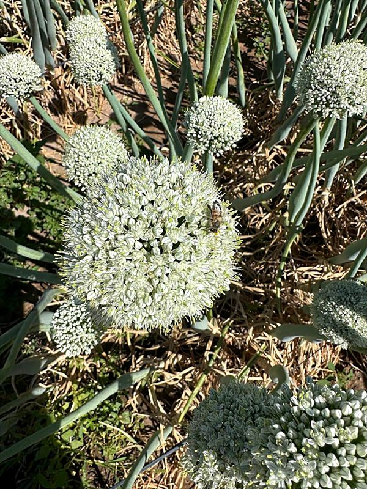
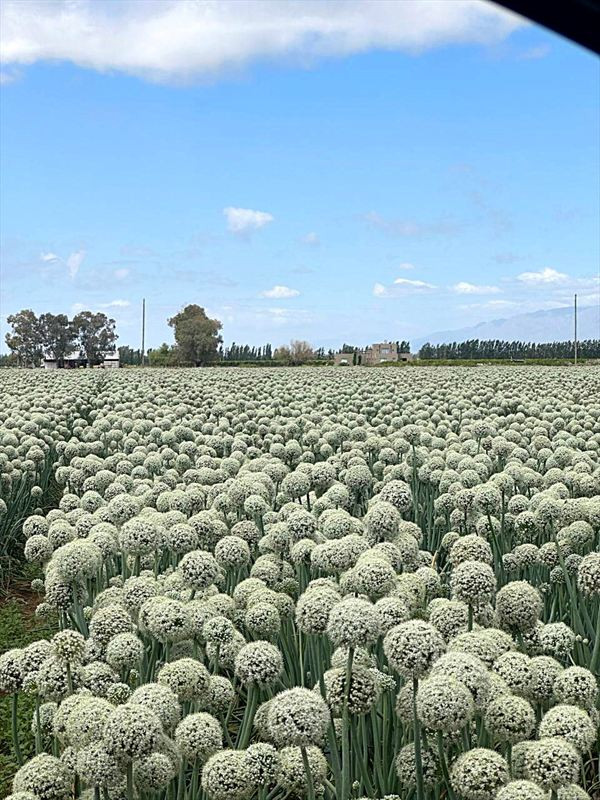
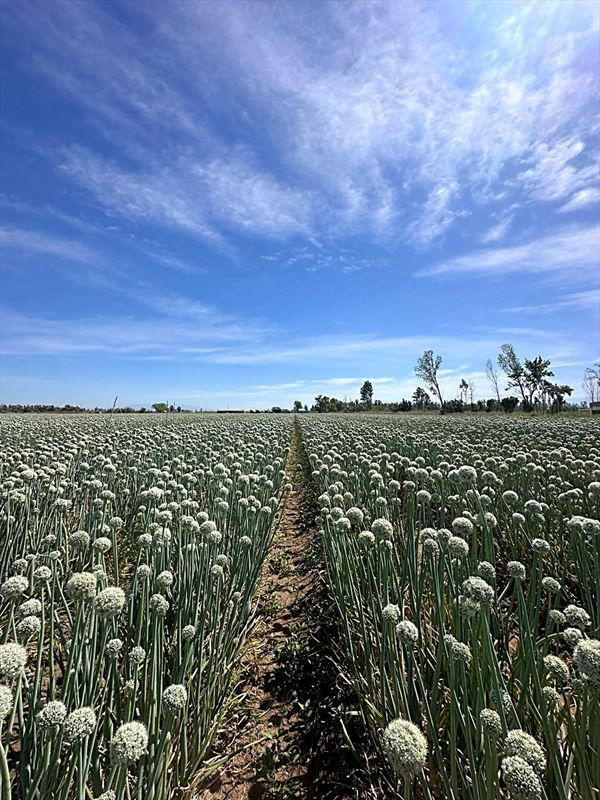
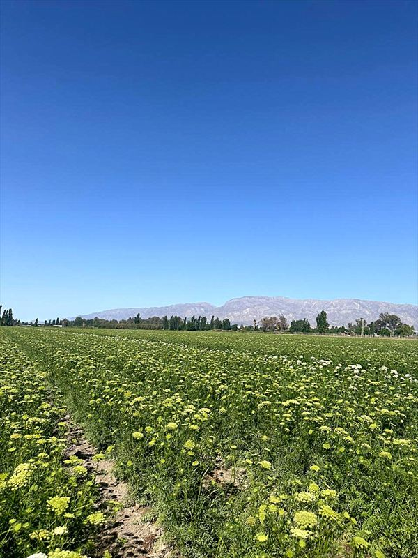
Del campo a la semilla
El recorrido completo, tal como ocurre en el campo. Cada imagen corresponde a una etapa real del trabajo.

01
Preparación del suelo. Laboreo y nivelación antes de que exista cultivo.
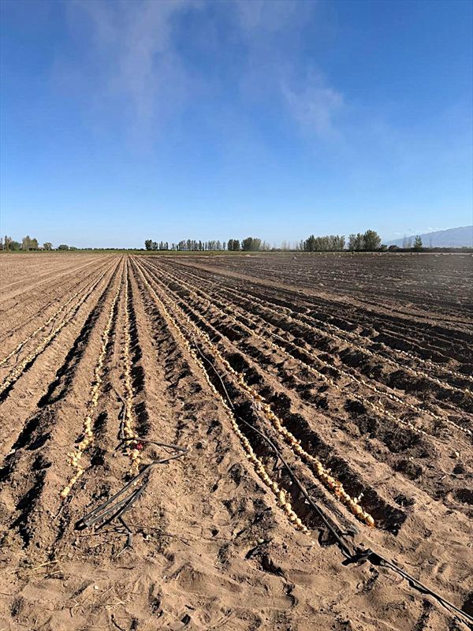
02
Implantación en líneas. La uniformidad de esta etapa se arrastra toda la campaña.
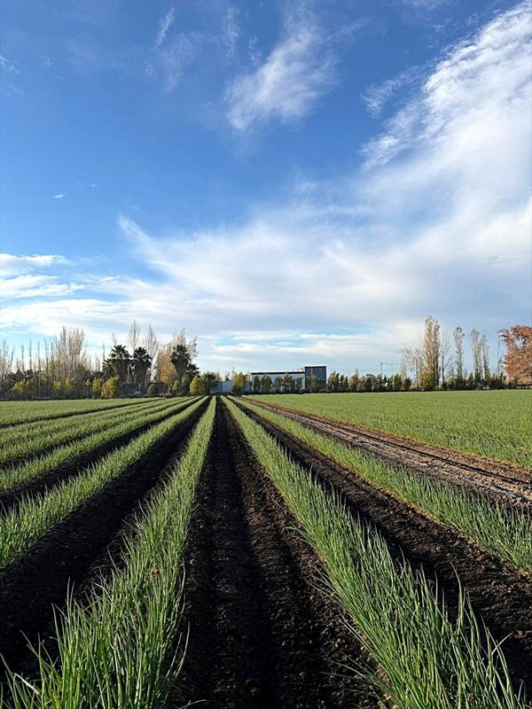
03
Desarrollo del lote, semana a semana, bajo el clima seco de la región.
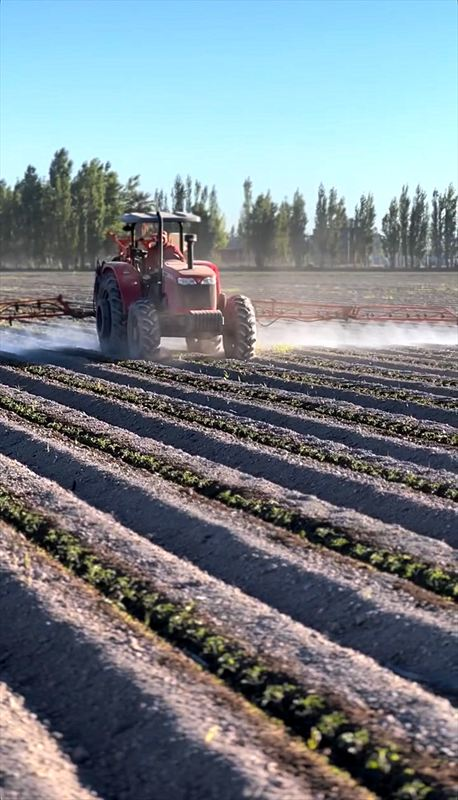
04
Manejo del cultivo: riego, nutrición y sanidad a lo largo de todo el ciclo.
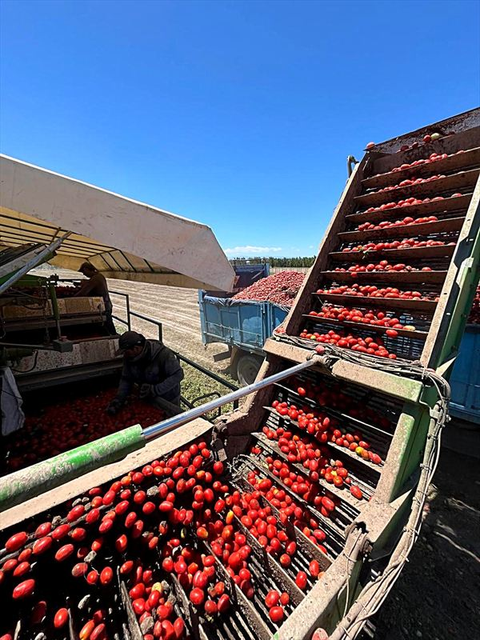
05
Recolección en el punto de madurez. El momento exacto define el resultado.
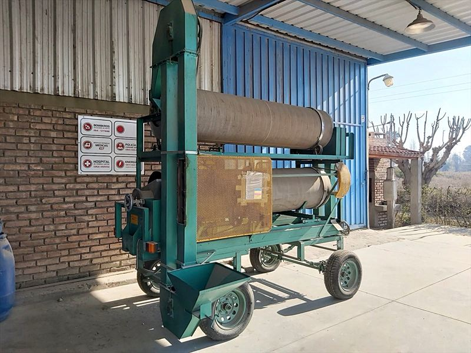
06
Limpieza y clasificación en planta, con equipamiento propio.
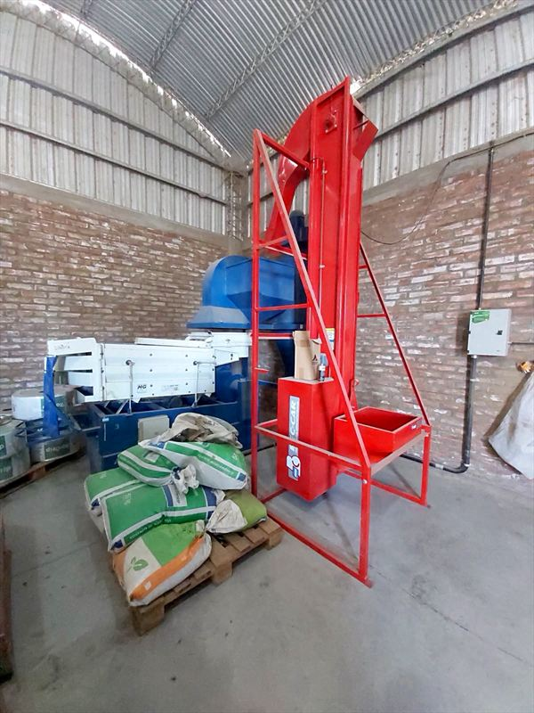
07
Lote acondicionado y embolsado, listo para su entrega.
Maquinaria y tecnología
Producir semilla implica volver al lote muchas veces y en momentos distintos. Contar con maquinaria y equipamiento propios permite trabajar cuando el cultivo lo pide, y no cuando hay disponibilidad de terceros.
En un cultivo destinado a semilla eso no es un detalle logístico: una tarea postergada en el momento equivocado puede condicionar toda la campaña.
El parque de máquinas cubre las tareas de preparación de suelo, implantación, manejo del cultivo y cosecha, y se complementa con el equipamiento de acondicionamiento en planta.
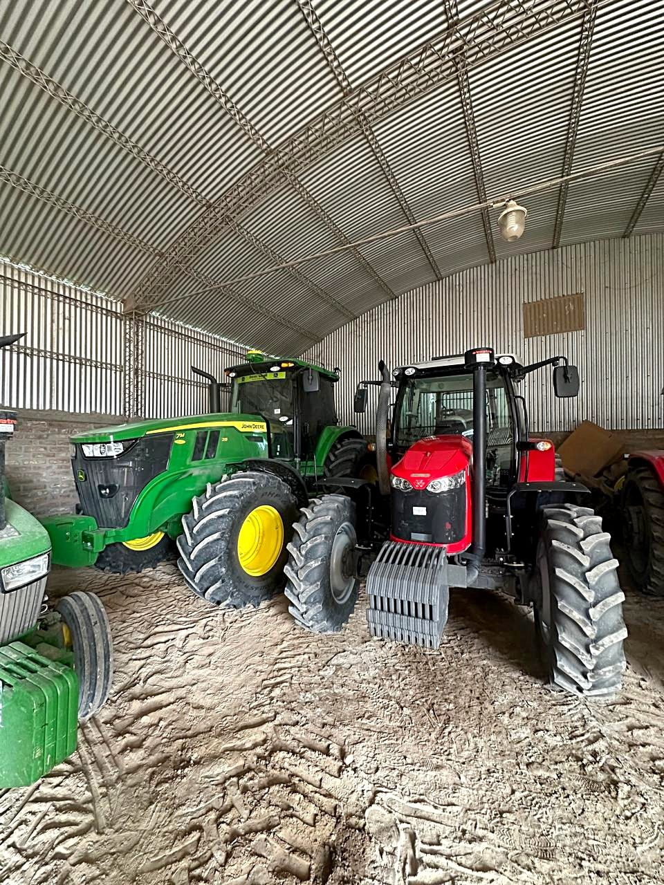
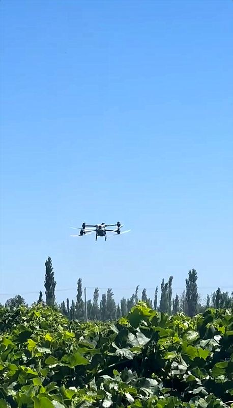
Aplicación aérea sobre el cultivo, con menor pisado del lote y acceso a sectores donde el paso de maquinaria resulta difícil.
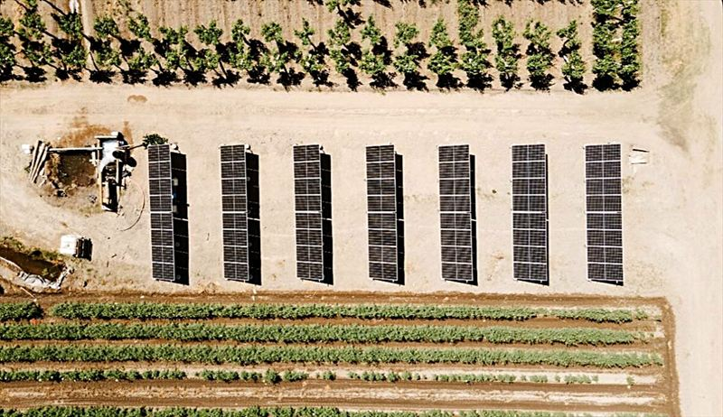
Instalación de paneles solares asociada al sistema de riego, aprovechando una de las condiciones que mejor caracteriza a la región.
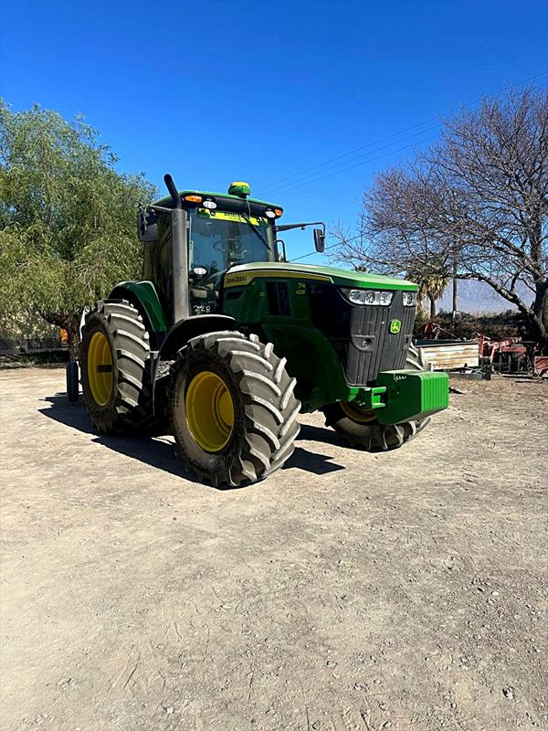
Tractores e implementos para la preparación del suelo, la implantación y el manejo del cultivo durante todo el ciclo.
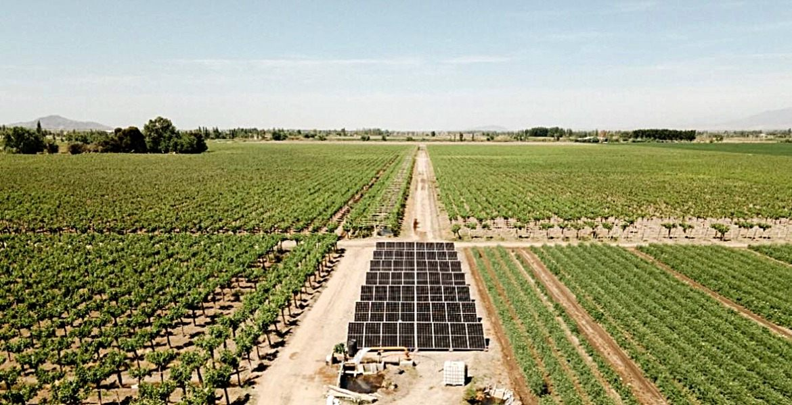
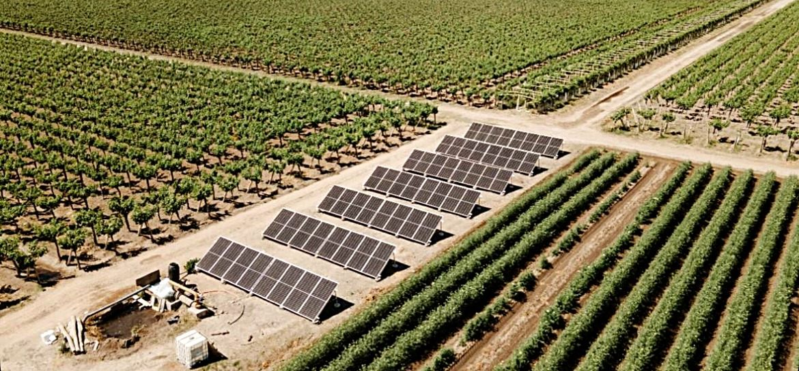
Limpieza, acondicionamiento y cuidado
La cosecha no es el final del proceso. Una semilla recién cosechada llega acompañada de restos vegetales, tierra, semillas de otras especies y material que no reúne las condiciones necesarias.
Separar todo eso es lo que convierte un volumen cosechado en un lote de semilla.
En planta, la semilla se limpia y se clasifica con equipamiento específico. El objetivo de esta etapa es obtener un lote homogéneo, libre de impurezas y en condiciones de conservarse sin que sus cualidades se deterioren.
Es una instancia poco visible y determinante: dos lotes cosechados en condiciones equivalentes pueden terminar siendo muy distintos según cómo hayan sido acondicionados.
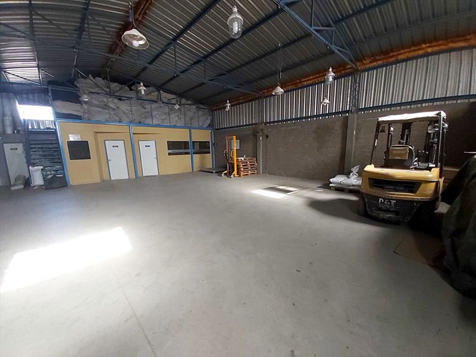
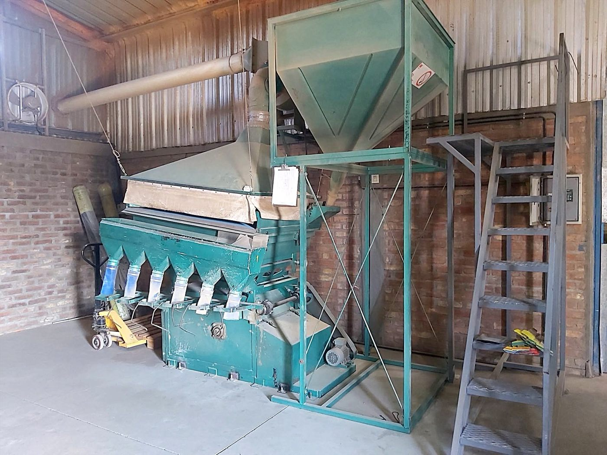
Respaldo, habilitaciones y control
Producir semilla de calidad no depende solo del lote. Depende de dónde se acondiciona, con qué equipos y bajo qué controles. Por eso la inversión está puesta en infraestructura propia, habilitada y preparada para trabajar con un estándar que no admite atajos.
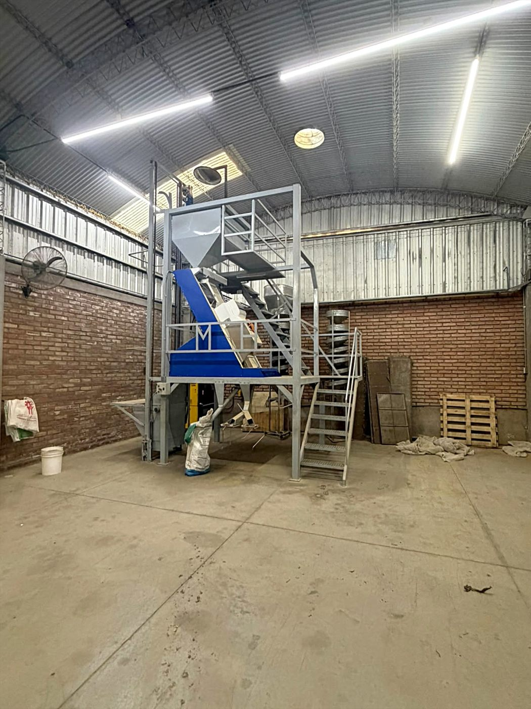
Nuestro galpón está habilitado y aprobado por SENASA, y se encuentra inscripto en el Registro Nacional de Comercio y Fiscalización de Semillas. Contamos además con todas las habilitaciones y aprobaciones necesarias para desarrollar la actividad con respaldo formal y sin zonas grises.
Equipamiento específico para el acondicionamiento de semilla, de alto valor y difícil de conseguir en el mercado. No es maquinaria adaptada: está pensada para esta tarea, y es lo que permite sostener un estándar superior.
Cada lote atraviesa un proceso riguroso de selección, acondicionamiento y control antes de salir. Ninguno se despacha sin haber pasado por todas las instancias.
El galpón se encuentra inscripto en el Registro Nacional de Comercio y Fiscalización de Semillas, lo que respalda formalmente la actividad de acondicionamiento y comercialización de semilla.
No hacemos trabajos a medias.
Si algo se hace, se hace bien.
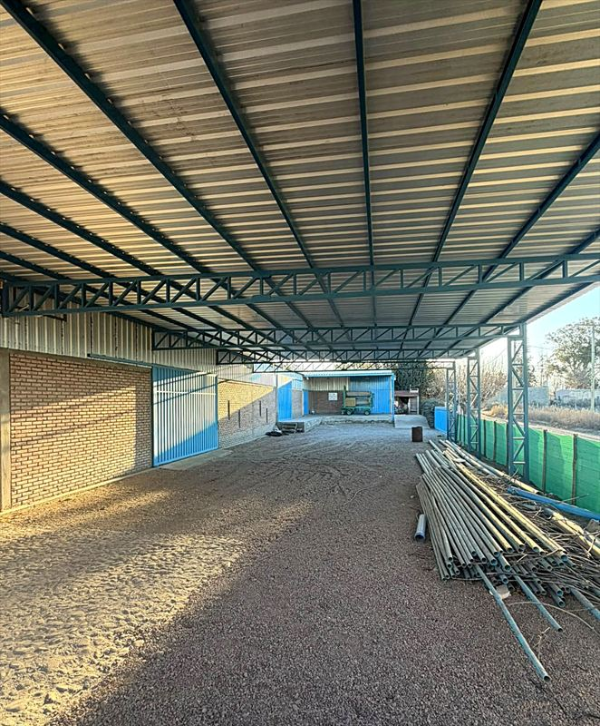
Comercialización
HidAgroSeed comercializa semilla hortícola tanto en compras de bajo volumen como en operaciones por mayor, con envíos a distintos puntos de Argentina. Trabajamos por pedido: la semilla se prepara y se entrega según lo que cada cliente necesita.
No mantenemos semilla en stock permanente. Cada operación se coordina previamente: se acuerda la especie, la variedad y la cantidad, y a partir de ahí se prepara el lote. Por eso conviene consultar con anticipación, para confirmar disponibilidad y plazos de entrega según la campaña.
Compras de menor volumen, orientadas a producción propia, huerta comercial o reventa en pequeña escala.
Operaciones por mayor, con condiciones a convenir según la especie, el volumen y el destino del pedido.
Realizamos envíos a distintos puntos de Argentina. La modalidad se coordina según el destino y el volumen.
Trabajamos por pedido, sin stock permanente. La disponibilidad y los precios se informan por consulta directa, ya que varían según la especie, el volumen y la campaña.
Nuestro trabajo
Registros tomados en la finca durante la campaña. Todo el material de este sitio es propio.
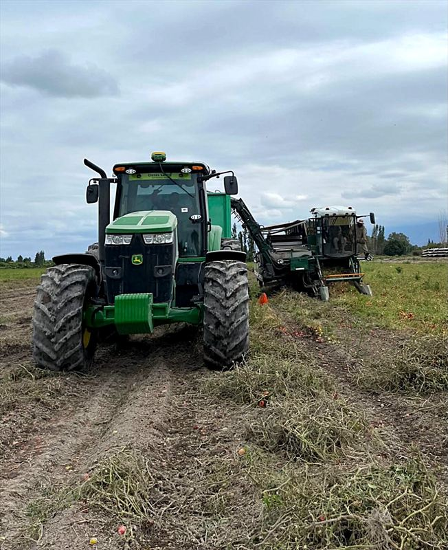
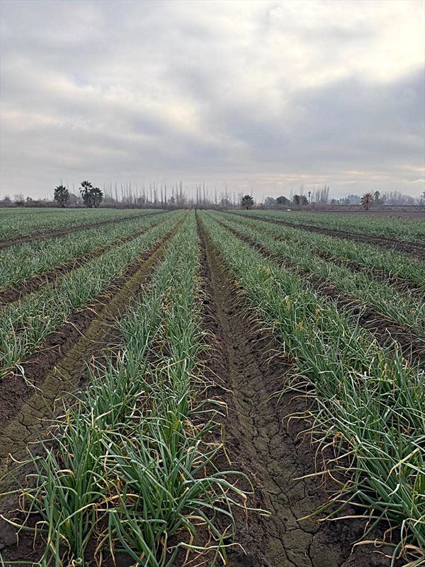
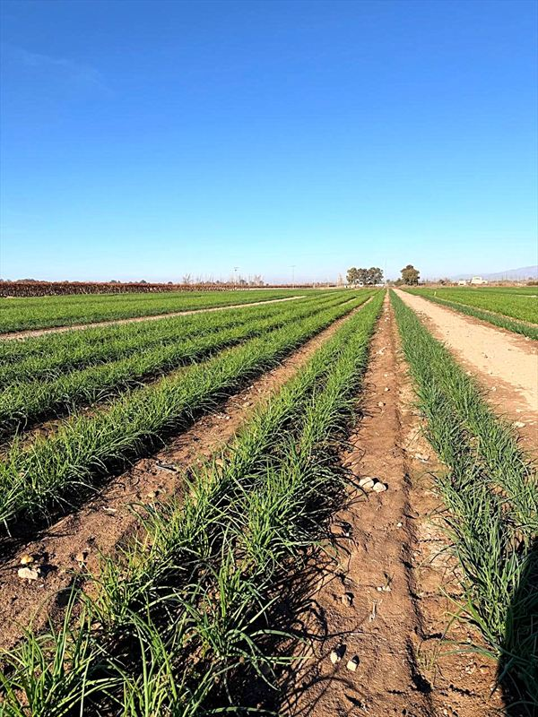
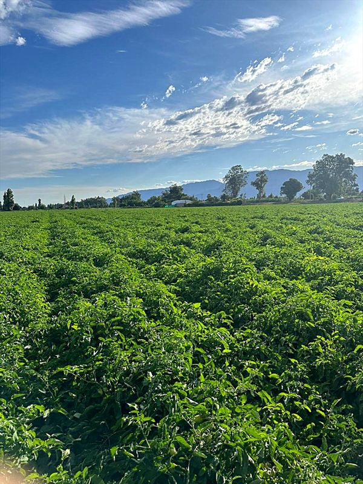
Hacé clic en cualquier fotografía del sitio para verla en grande.
Contacto
Escribinos para consultar disponibilidad, variedades, volúmenes y condiciones de envío.